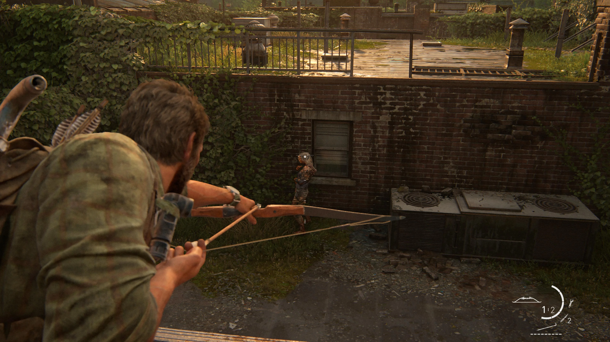
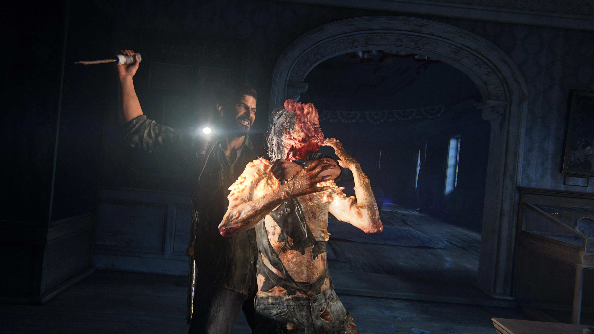
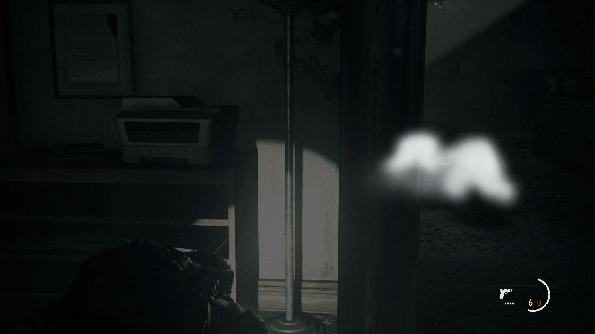
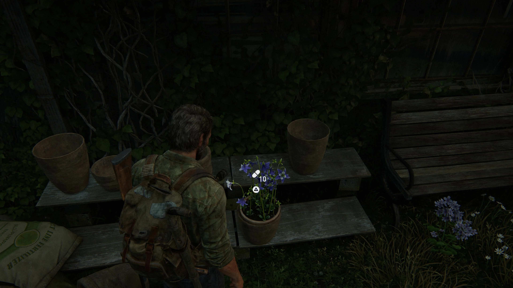
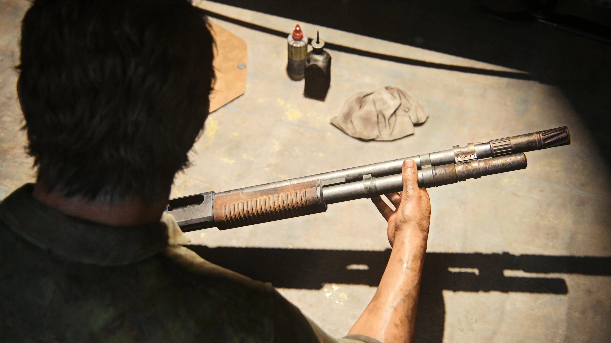
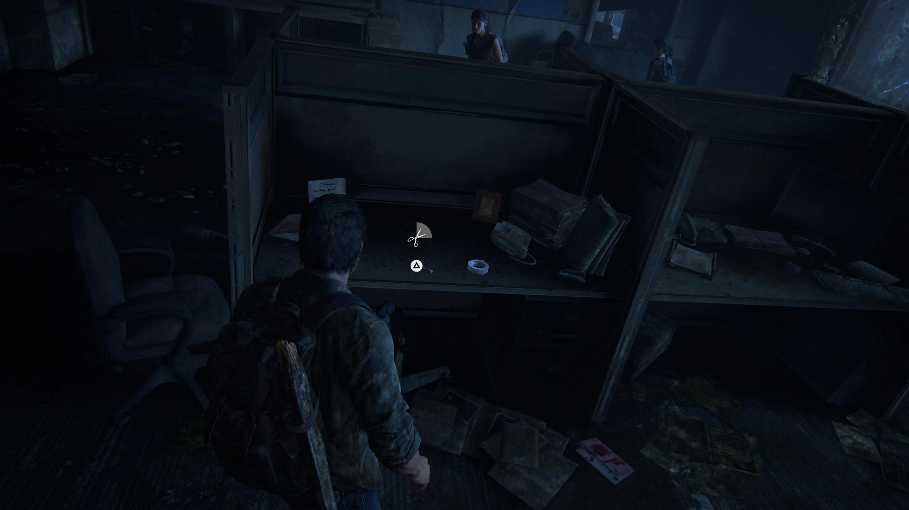

GAMEPLAY
ATIRAR

O sistema de tiro é focado em precisão e estratégia. O jogador pode utilizar diferentes armas de fogo, mirando manualmente e aproveitando a cobertura para enfrentar inimigos. A munição é limitada, incentivando o jogador a escolher cuidadosamente quando atirar.
STEALTH

O jogador pode evitar ou eliminar inimigos silenciosamente. É possível se esconder atrás de objetos, agachar-se, observar os inimigos e aproveitar o ambiente para passar despercebido.
OUVIR

Permite identificar inimigos próximos mesmo quando eles estão fora do campo de visão. Ao ativá-la, o jogador consegue perceber a localização dos inimigos através de obstáculos, facilitando a exploração e o planejamento dos movimentos.
SUPLEMENTOS

Suplementos são recursos encontrados durante a exploração e usados para melhorar diferentes habilidades do personagem. Eles permitem aprimorar atributos como a quantidade de vida, velocidade de cura e eficiência de determinadas ações.
UPGRADES DE ARMA

Você pode melhorar as armas usando peças encontradas durante a exploração. As melhorias podem aumentar características como capacidade do carregador, estabilidade, alcance e velocidade de recarga, tornando as armas mais eficientes nos combates.
CRIAÇÃO

Você pode criar itens utilizando materiais encontrados durante a exploração. O jogador pode fabricar recursos como kits médicos, coquetéis Molotov e outros itens úteis para combate e sobrevivência.